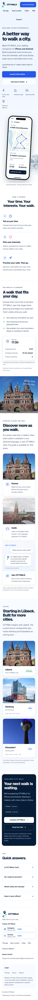
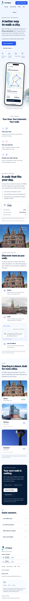
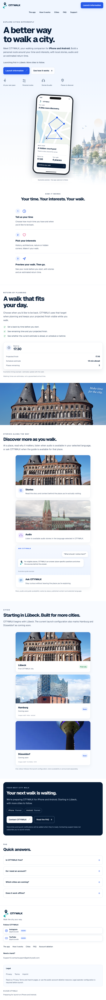
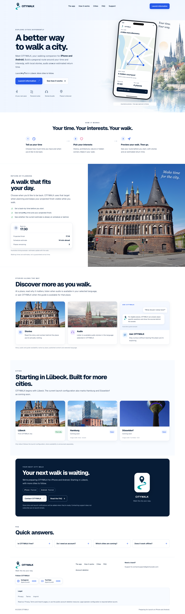

320 px
320 × 8,248 px · full-page capture

Scroll inside the frame, or open the original image to zoom.
CITYWALK / Visual review / 395
Actual full-page captures of the existing LandingPreview. The original page has not been redesigned.
Original captures: 19 October 2026 · Reused unchanged · Source preserved at 7b99bf81c7c19010ef6019ac9a31cf974903e3b6
320 × 8,248 px · full-page capture

Scroll inside the frame, or open the original image to zoom.
390 × 7,841 px · full-page capture

Scroll inside the frame, or open the original image to zoom.
768 × 7,221 px · full-page capture

Scroll inside the frame, or open the original image to zoom.
1440 × 4,759 px · full-page capture

Scroll inside the frame, or open the original image to zoom.